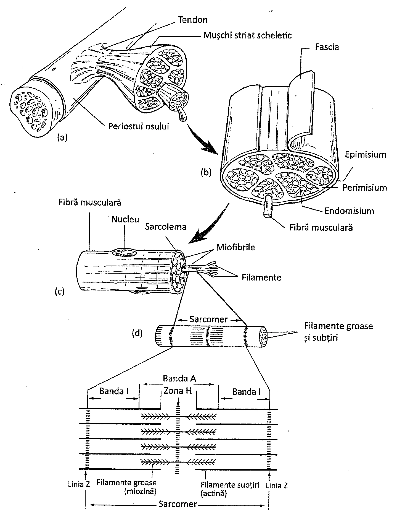
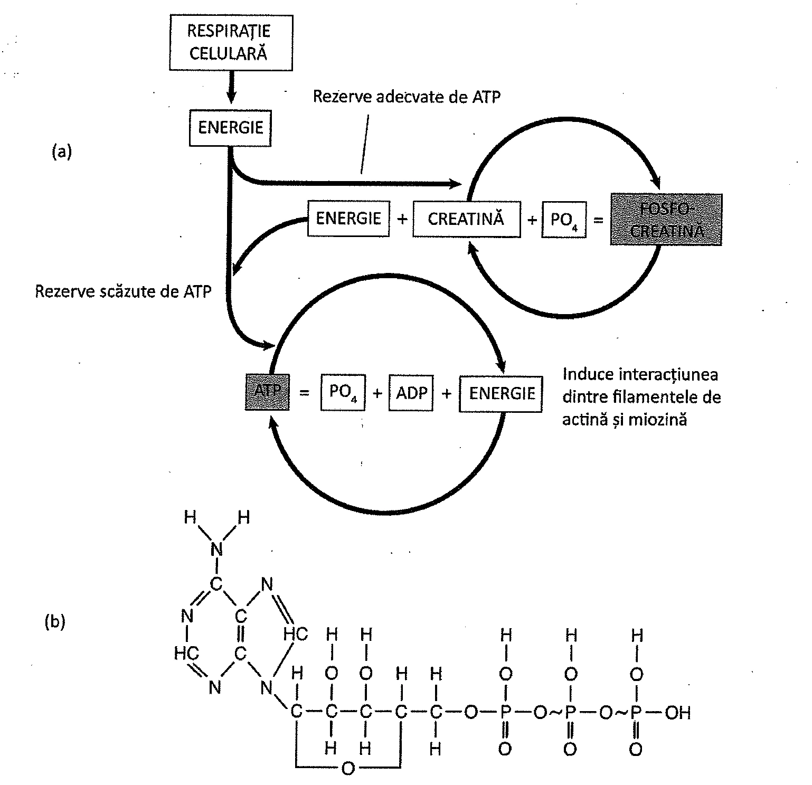

8.1. Țesutul muscular
Țesutul muscular este unul din cele patru țesuturi de bază. Se distinge de celelalte țesuturi prin capacitatea de a se contracta și de a efectua lucru mecanic. Unitatea structurală a țesutului muscular este celula musculară, care are o formă alungită și se mai numește și fibră musculară. (În anatomie, termenii de celulă musculară și fibră musculară sunt similari, interschimbabili)
Mușchii striați scheletici sunt inserați pe oase, unitatea mușchi-țesut osos asigurând mișcările corpului. Mușchiul cardiac al inimii pompează sângele. Țesutul muscular neted intră în componența tubului digestiv, a tractului respirator și a vaselor de sânge. Deși mușchii au forme și funcții diferite, aceștia în ansamblu pot fi clasificați în mușchi striați scheletici, mușchi netezi și mușchi de tip cardiac.
Mușchiul scheletic și cel cardiac sunt mușchi striați, iar cel neted nu. Mușchii scheletici sunt sub control voluntar, iar mușchiul cardiac și cel neted, sub control involuntar.
Mușchiul neted (nestriat) este alcătuit dintr-o masă de celule fusiforme contractile. Mușchiul neted se găsește în peretele tubului digestiv, al uterului, în vasele de sânge și în anumite ducte. Mușchiul cardiac este alcătuit și el din celule, dar proteinele contractile au o organizare complexă față de cele din mușchiul neted. Celulele musculare cardiace prezintă conexiuni speciale în peretele inimii prin intermediul joncțiunilor de tip „gap" de la nivelul discurilor intercalare. (Tabelul 8.1 compară cele trei tipuri de țesuturi musculare.)
| Caracteristică | Mușchiul striat scheletic | Mușchiul neted | Mușchiul cardiac |
|---|---|---|---|
| Localizare | Atașat scheletului | Peretele intestinelor, vase sanguine etc. | Peretele inimii |
| Tip de control | Voluntar | Involuntar | Involuntar |
| Forma fibrelor | Alungite, cilindrice, cu capete rotunjite | Alungite, fusiforme, cu capete ascuțite | Alungite, cilindrice, ramificate |
| Striații | Prezente | Absente | Prezente |
| Număr de nuclei pe fibră | Mulți | Unul | Unul |
| Poziția nucleilor în celulă | Periferici | Central | Central |
| Viteza contracției | Cel mai rapid | Cel mai lent | Intermediar |
| Capacitatea de a rămâne contractat | Cea mai mică | Cea mai mare | Intermediară |
Cel de-al treilea tip de mușchi și, totodată cel mai frecvent întâlnit, este mușchiul scheletic. În mușchiul scheletic, fiecare celulă musculară este în realitate un set de zeci sau sute de celule fuzionate. Celulele musculare rezultate sunt de obicei foarte lungi, și sunt denumite tipic fibre musculare. Un număr mare din aceste fibre formează organul numit „mușchi". Mușchiul striat este asociat scheletului. Este tipul de mușchi la care ne referim când se vorbește despre „mușchi" într-un context general.
8.2. Mușchiul striat scheletic
Una din caracteristicile de bază ale mușchiului striat scheletic este capacitatea acestuia de a exercita forță asupra oaselor. Celulele musculare se contractă printr-un mecanism activ și se relaxează printr-un mecanism pasiv. Contracția apare doar în urma unei stimulări.
Ansamblul complex al locomoției necesită ca două grupuri de mușchi să realizeze mișcări ale părților corpului în direcții opuse. Astfel mușchii acționează unul împotriva celuilalt, situație în care se numesc mușchi antagoniști. De exemplu, la articulația genunchiului, gamba este flectată posterior de către mușchii flexori și extinsă anterior de către mușchii extensori. Prin contracție, mușchii mișcă părțile scheletului de care sunt atașați.
Structura țesutului muscular striat scheletic
Celulele țesutului muscular scheletic sunt separate și învelite în straturi de țesut conjunctiv. Endomisium învelește fiecare fibră musculară, perimisium învelește un pachet de fibre (sau fascicule) musculare, iar epimisium și fascia învelesc întreg mușchiul. Stratul extern al fasciei, fascia superficială, conține o cantitate mare de țesut adipos la persoanele obeze. Porțiunea mușchiului care conține fibrele musculare se numește gaster (sau corp). Endomisium, perimisium, epimisium și fascia se continuă dincolo de corpul mușchiului pentru a forma tendonul, care atașează mușchiul de os.
Structura celulei musculare
Mușchiul striat scheletic se află sub control voluntar; de regulă, el se contractă numai când este stimulat de un impuls nervos. Mușchiul scheletic este alcătuit din fascicule de fibre (celule) musculare. Fiecare fibră conține un set de 4-20 filamente filiforme denumite miofibrile. Fiecare miofibrilă are 1-2 μ lățime și până la 100 μ lungime. Miofibrilele se găsesc în citoplasmă, numită și sarcoplasmă. În sarcoplasmă se găsesc numeroase mitocondrii ce furnizează ATP ca sursă de energie pentru contracția miofibrilelor.
Unitatea funcțională a mușchiului striat scheletic este sarcomerul.
Miofibrilele sunt organizate de-a lungul axului lor longitudinal în unități mai mici, numite sarcomere, fiecare având aproximativ 2 μ lungime (Figura 8.1). Sarcomerele reprezintă unitatea funcțională a mușchiului striat scheletic. Distribuția repetitivă a sarcomerelor îi conferă mușchiului aspectul striat caracteristic.

Aspectul microscopic al sarcomerului indică prezența a două tipuri de miofilamente: filamente subțiri și filamente groase așezate paralel între ele. Filamentele groase sunt compuse dintr-un tip de proteină numită miozină, în timp ce filamentele subțiri sunt formate dintr-o proteină numită actină. Zona în care filamentele de actină din două sarcomere adiacente se întrepătrund se numește linia Z. Linia Z împarte în două jumătăți egale o bandă largă, clară numită banda I. Banda largă și densă din mijlocul sarcomerului, formată prin suprapunerea filamentelor de miozină, printre care se găsesc filamente de actină, se numește banda A. Banda A este împărțită în două jumătăți egale de o zonă H, ce conține doar filamente de miozină, fără filamente de actină. Repetiția benzilor A și I determină aspectul striat din miofibrilele mușchilor striați.
Filamentele subțiri sunt ancorate la nivelul liniei Z. În timpul contracției musculare, filamente opuse de actină sunt trase de-a lungul filamentelor de miozină, în așa fel încât două seturi de filamente de actină sunt trase unul spre celălalt, printr-un mecanism ce va fi detaliat în continuare.
8.3. Energia necesară contracției musculare
Energia utilizată pentru contracția musculară derivă din ATP. ATP-ul rezultă din reacțiile chimice care au loc în numeroasele mitocondrii aflate în vecinătatea filamentelor subțiri și groase. Capetele filamentelor de miozină conțin o enzimă, ATP-aza, care desface ATP-ul în ADP și grupări fosfat, eliberând energia din moleculă.
Rezervele de ATP din fibra musculară sunt limitate, deci ATP-ul trebuie în permanență regenerat din ADP și grupări fosfat. Una din sursele de regenerare a ATP-ului este fosfocreatina (creatin fosfatul). Fosfocreatina conține legături fosfat cu nivel energetic ridicat, reprezentând un depozit de energie celulară. Când ATP-ul este epuizat, fosfocreatina eliberează energie, prin transferarea fosfatului unei molecule de ADP, în vederea regenerării moleculelor de ATP (Figura 8.5).
Când un mușchi este extrem de activ, rezervele de ATP și de fosfocreatină se pot epuiza. Din acest moment, metabolismul glucidic devine sursă de energie pentru celula musculară. Metabolismul glucidic, prin respirație celulară, implică glicoliza, ciclul Krebs, sistemul transportor de electroni și chemiosmoza (Capitolul 19). Reacțiile respirației celulare ce furnizează ATP au loc la nivelul citoplasmei și mitocondriilor, necesitând oxigen pentru finalizarea lor.
Oxigenul necesar respirației celulare este transportat la fibrele musculare prin intermediul hemoglobinei din eritrocite. În fibrele musculare, un pigment numit mioglobină, leagă moleculele de oxigen și le depozitează temporar. Așa cum s-a menționat anterior, fibrele musculare roșii sunt roșii datorită prezenței de mioglobină. Prezența mioglobinei în celulele musculare reduce necesitatea unui aport continuu de oxigen în timpul contracției.
Când mușchiul se contractă intens pentru câteva minute, oxigenul nu poate fi asigurat suficient de rapid pentru satisfacerea necesităților celulare. În această situație celulele musculare depind de ATP-ul rezultat din faza anaerobă a respirației celulare (Capitolul 19).
Acidul lactic se produce ca urmare a unei respirații celulare anaerobe prelungite în vederea furnizării de ATP.

În timpul glicolizei anaerobe, moleculele de glucoză sunt convertite în acid piruvic prin etape succesive, acest proces furnizând câte două molecule de ATP pentru fiecare moleculă de glucoză scindată. Dacă rezerva de oxigen a celulei este epuizată, acidul piruvic este convertit în acid lactic. Pe măsura acumulării acidului lactic, se instalează oboseala musculară extremă și datoria de oxigen. Aceasta presupune suplimentarea nevoilor de oxigen pentru a preveni formarea de acid lactic. Acidul lactic determină modificări ale pH-ului, iar fibrele musculare vor răspunde astfel mai slab la stimulare.
O mare parte din acidul lactic produs în celulele musculare difuzează în afara celulei și este transportat de către sânge la ficat. Celulele ficatului utilizează oxigenul pentru a reconverti acidul lactic în molecule cu randament energetic ridicat. Oxigenul este de asemenea utilizat pentru resinteza ATP-ului prin respirație celulară și pentru formarea fosfocreatinei. Efectul datoriei de oxigen poate fi constatat prin dificultatea de a respira după un efort extenuant.